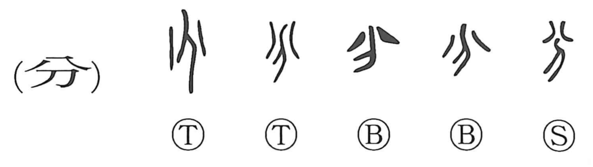

分

Kun: wakeru, wakareru, wakaru, wakatsu | On: bun, fun, bu
to divide ・ to separate ・ part ・ minute
Explanation
分 combines 八, the shape of two parts separating, with 刀, a knife. The knife brings about the division shown above it. Together the elements express cutting or separating something into two.
From this concrete action come dividing, distributing, parting, and distinguishing one thing from another. A division also establishes a boundary or an allotted portion. Applied to social life, that portion becomes a person's station, proper role, or duty, as in 身分 and 名分.
The character also supplies units used in measuring length, weight, angle, and time. These uses concern a defined part of a larger whole. Its related words include 半 and 判, both concerned with division, and 頒, the distribution of portions.